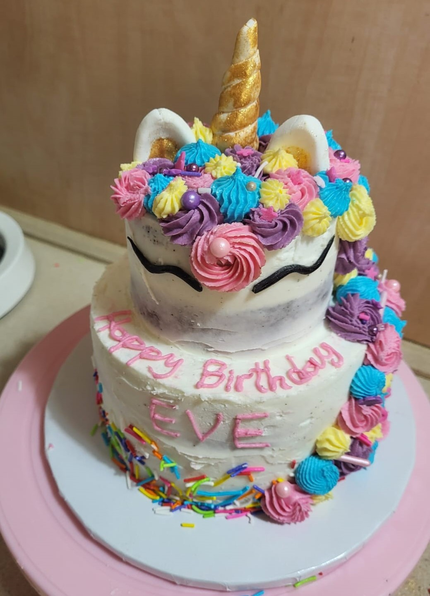
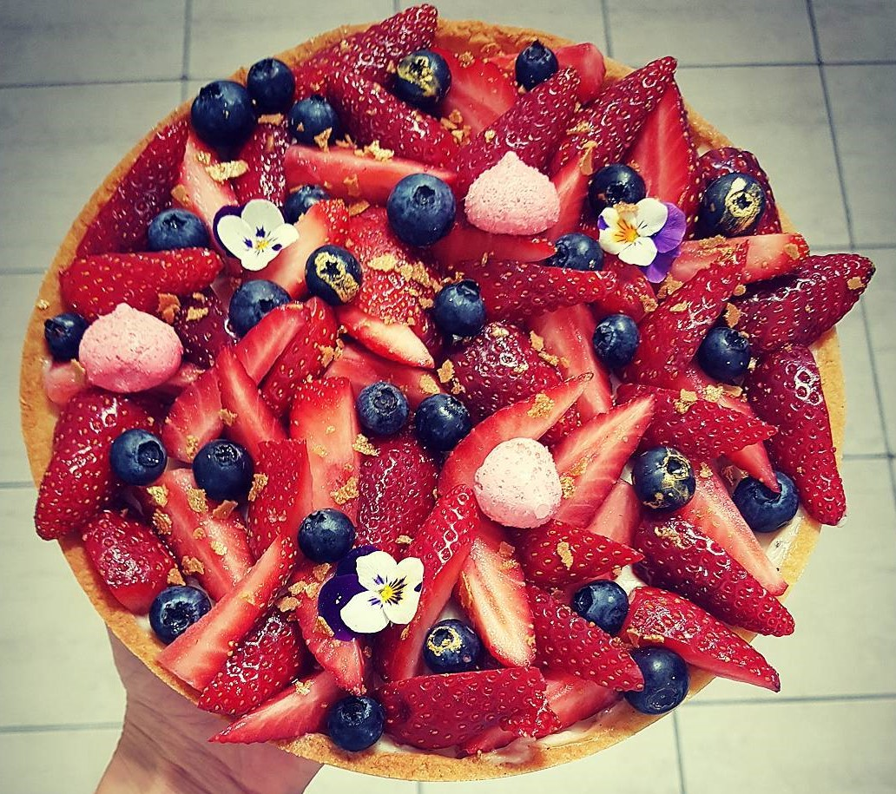
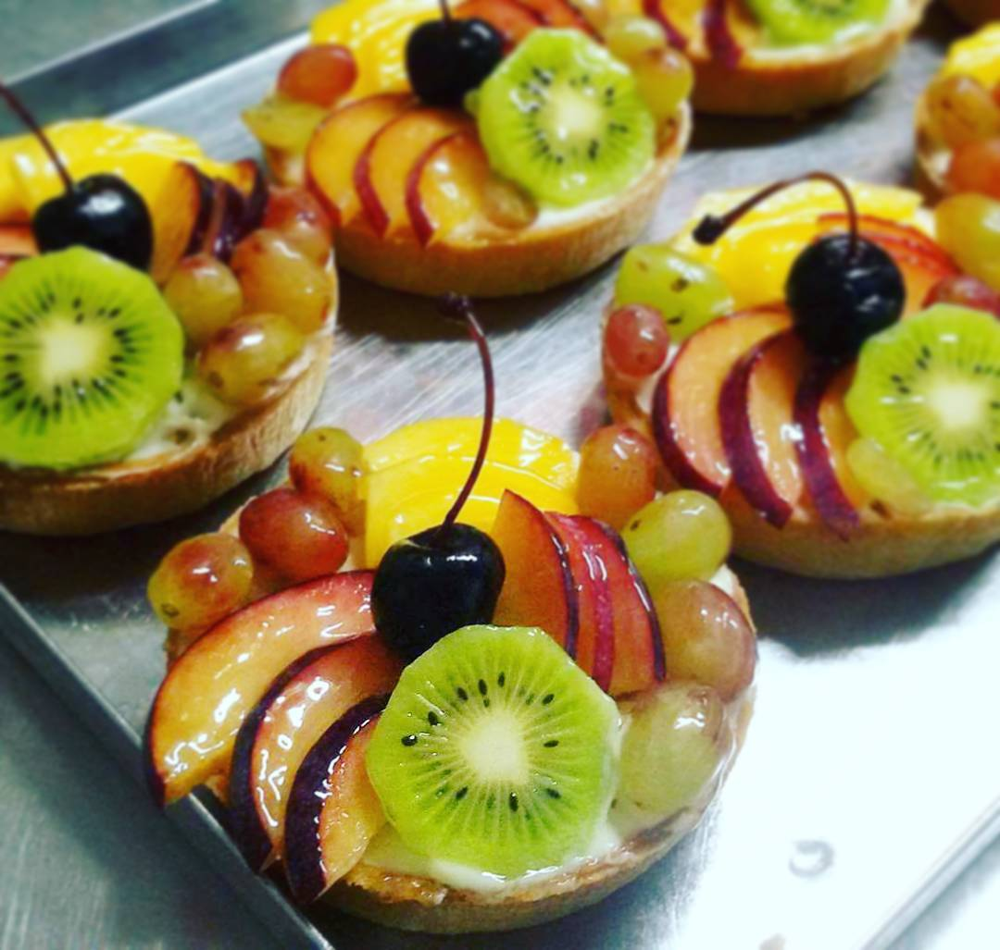
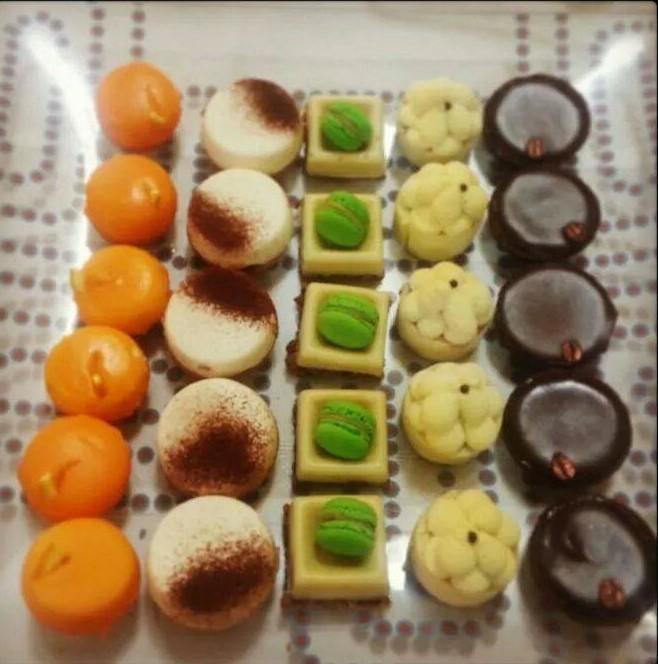
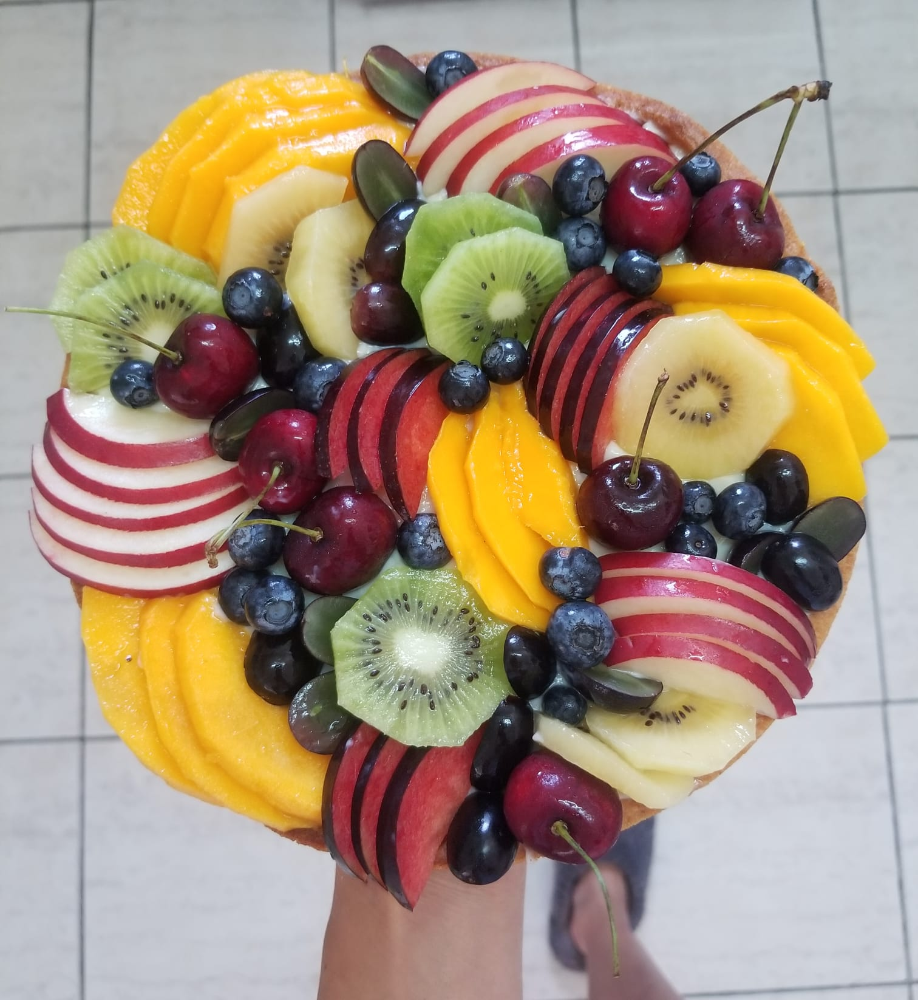

Welcome to my webpage, where the artistry of pastry craftsmanship converges with the precision of Quality Assurance (QA)
With a background sculpted in the culinary world, I bring a meticulous eye for detail, innovative problem-solving skills,
and a commitment to excellence to the realm of software testing.
Transitioning from crafting delectable pastries to ensuring impeccable software quality,
my journey reflects a dedication to continuous learning and growth.
Each day, I embrace the challenge of upholding the highest standards, blending creativity with rigor to deliver exceptional results.
Join me on this unique journey where every bug squashed is a recipe perfected
My work as a Pastry Chef





My work From College
During college, I created a heartfelt short film solely dedicated to my father.
I handled all aspects of production, from filming to editing.
Through intimate interviews and footage, the film shows his life and his profound influence on my life.